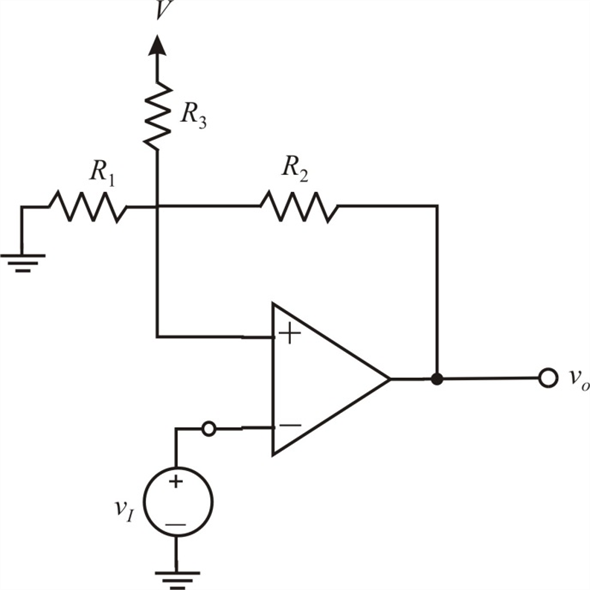

Step 1:
Refer to Figure 17.19 (a) in the text book for the bistable multivibrator circuit.
Redraw the circuit by connecting the positive terminal of the op amp to a positive voltage source V through a resistor, .

The lower and higher threshold voltages are and 
The saturation levels are and
Step 2:
(a)
Apply Kirchhoff’s current law at non inverting terminal junction is
Thus, the threshold voltage is .
The lower threshold voltage  is .
is .
Step 3:
(b)
Consider the equation for threshold voltage,  .
.
Substitute 13 V for , for  and 5.1 V for
and 5.1 V for  .
.
…… (1)
Consider the equation for threshold voltage,  .
.
Substitute 13 V for ,  for and 4.9 V for
for and 4.9 V for  .
.
…… (2)
Step 4:
Solve equations (1) and (2) to get the following values:
So,
Thus, the resistance values are,
.